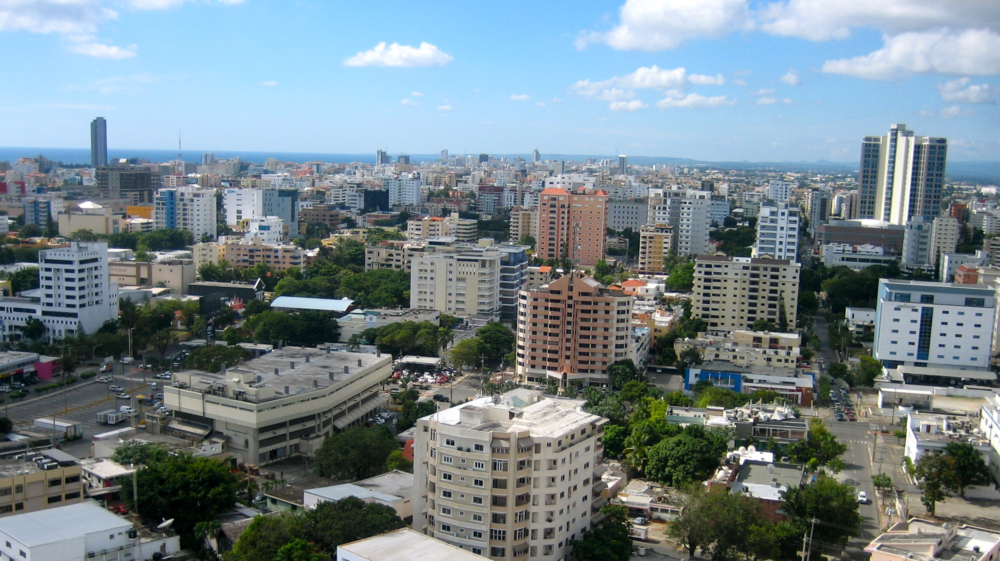
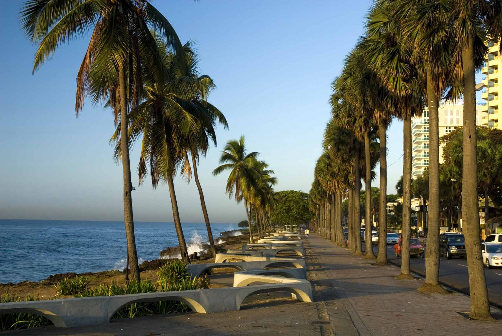

    <div class="pg">
        <div class="uk-container uk-container-center">
            <div class="uk-width-small-1-1 uk-width-medium-4-5 uk-container-center">
                <h1 class="uk-text-center">Traveling to Santo Domingo</h1>
                <div class="pg-content">
                  
                  <h2>The Airport</h2>
                  <p>Las Américas International Airport (airport code SDQ) is located near Santo Domingo. The airport is about 45 minutes from the city.</p>
                  <h2>The City</h2>
                  
                  <p>PyCaribbean will be held in Santo Domingo, Dominican Republic.</p>
                  <p>Founded by Bartholomew Columbus in 1496, on the east bank of the Ozama River and then moved by Nicolás de Ovando in 1502 to the west bank of the river, the city is the oldest continuously inhabited European settlement in the Americas, and was the first seat of the Spanish colonial rule in the New World. Santo Domingo is the site of the first university, cathedral, castle, monastery, and fortress in the New World. The city's Colonial Zone was declared as a World Heritage Site by UNESCO.</p>
                  <p>Santo Domingo is the cultural, financial, political, commercial and industrial center of the Dominican Republic, with the country’s most important industries being located within the city. Santo Domingo also serves as the chief seaport of the country. The city's harbor at the mouth of the Ozama River accommodates the largest vessels, and the port handles both heavy passenger and freight traffic. Temperatures are high year round, with a cool breeze around winter time.</p>
                  <p>If you want to know what places to visit, you can check out the <a href="/places-to-visit.html">places to visit page</a>.</p>
                  <h2>Weather </h2>
                  <p>The average temperature in Santo Domingo varies little, because the tropical trade winds help mitigate the heat and humidity throughout the year. Thanks to these trade winds, Santo Domingo has a tropical climate but seldom experiences the heat that one may expect to find. December through March are the coolest months and July through September are the warmest.</p>
                  <p>Our average temperature for February is 25°C. Let’s say we will give you a warm welcome.</p>
                </div>
            </div>
        </div>
    </div>
